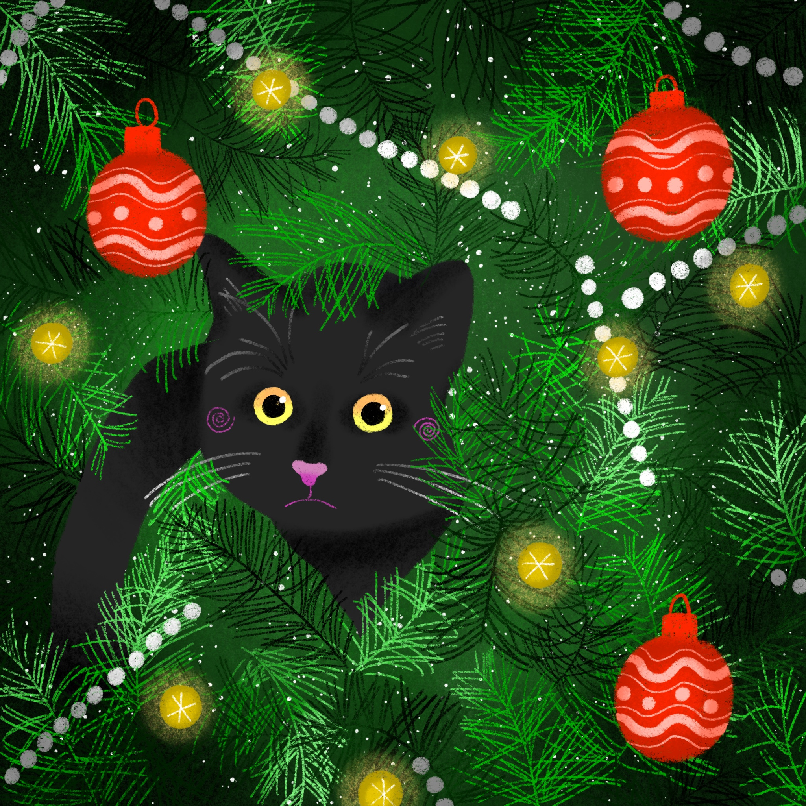

Mes services
Pré-visite
Afin d'établir un premier contact et de définir vos attentes et souhaits, je vous propose de nous rencontrer préalablement. Cette pré-visite me permettra également de connaître votre animal et de tisser un premier lien avec lui.
A cette occasion je vous proposerai un devis personnalisé et nous pourrons établir un contrat de garde.
Cette pré-visite vous est OFFERTE
Visite à domicile
Les chats aiment leur routine et leur environnement. Je vous propose donc de me rendre directement chez vous en visite à domicile afin d'assurer le confort maximal de votre petit protégé.
Les visites vont de 30 minutes à 1h selon vos besoins.
Elle comportent :
Pension à mon domicile
Lors d'un départ prolongé, l'idéal est parfois de laisser son animal en pension afin qu'il ne reste pas seul trop longtemps. Je propose donc également de garder vos protégés à mon domicile en pension.
Votre animal aura accès :
! J'accepte en pension uniquement les chats vaccinés contre leucose, typhus, coryza et chlamydiose (sur présentation du carnet de santé) !
Les petits plus...
A chaque visite je vous envois photos et vidéos ainsi que des nouvelles de votre animal et de votre domicile.
Si vous le souhaitez je peux également
